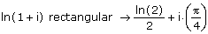
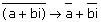
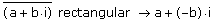

Writing Complex Numbers in Standard Form |
To write a complex number in standard, rectangular form, a + bi, select the expression in which the variables occur and either:
- or -
Then press [Enter].
Mathcad returns the result in the form a + bi, where a and b are the real and imaginary parts of the complex number, respectively.

Ordinarily, Mathcad assumes that all symbolic variables in an expression are complex. However, when you apply the keyword "rectangular," Mathcad assumes that the variables are real, so that it can return an answer in rectangular form. For example, if you evaluate the complex conjugate

Mathcad assumes that a and b are complex, so it returns the answer with conjugate bars over a and b. But if you add the keyword "rectangular," Mathcad assumes that a and b are real, so it removes the conjugate bars and takes the conjugate of i to return the following.
